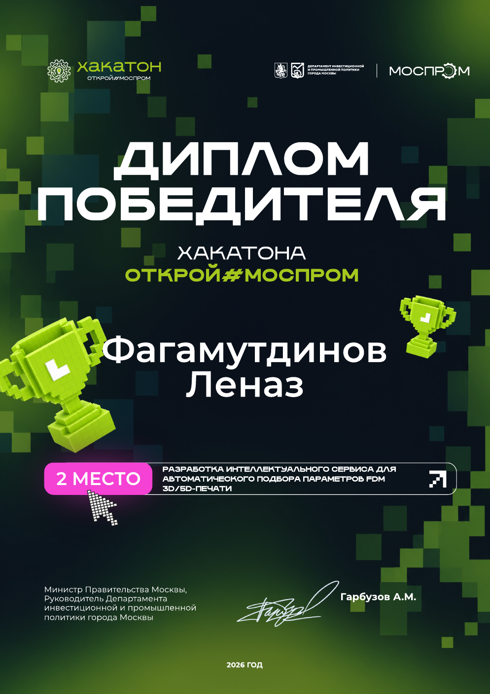

2 место — хакатон «Открой#МОСПРОМ», 2026
Разработка интеллектуального сервиса для автоматического подбора параметров FDM 3D/5D-печати. Диплом победителя вручён Департаментом инвестиционной и промышленной политики города Москвы.
Студент 2-го курса Университета Иннополис по направлению «Математические основы ИИ».
Сфокусирован на мультиагентных системах и их безопасности (AI Safety), а также на агентах с долгосрочной памятью. Имею практический опыт внедрения защитных механизмов для LLM-агентов в рамках исследовательских проектов. Быстро осваиваю новые инструменты, готов к интенсивной работе и решению нестандартных задач в области безопасного ИИ.

Разработка интеллектуального сервиса для автоматического подбора параметров FDM 3D/5D-печати. Диплом победителя вручён Департаментом инвестиционной и промышленной политики города Москвы.
Лето 2026 – настоящее время
Разрабатываю систему-обёртку вокруг LLM-агента с долгосрочной памятью (LTM). Исследую, как защитить агента от атак через его память, не жертвуя при этом качеством работы. LedgerMem контролирует, что и как попадает в память агента и извлекается из неё. Разнообразные эвристики при этом одновременно повышают безопасность и улучшают качество работы агента с памятью. Провожу эксперименты и сравниваю подход с агентами без защиты.
Лето 2026
Работал над проектом по интеграции защит агентных систем в Inspect Evals. Реализовал защиты ban-tool, guardrail и CaMeL от Google. Проверял их на разных тестах и составлял выводы об их надёжности и полезности.
2025 – 2029 (ожидаемый выпуск)
Университет Иннополис, 09.03.01, «Математические основы ИИ».
Английский — B2.
Готов много и интенсивно работать, всегда рад изучить что-то новое.